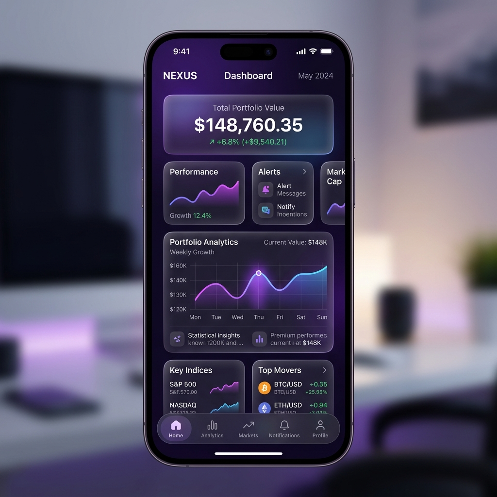
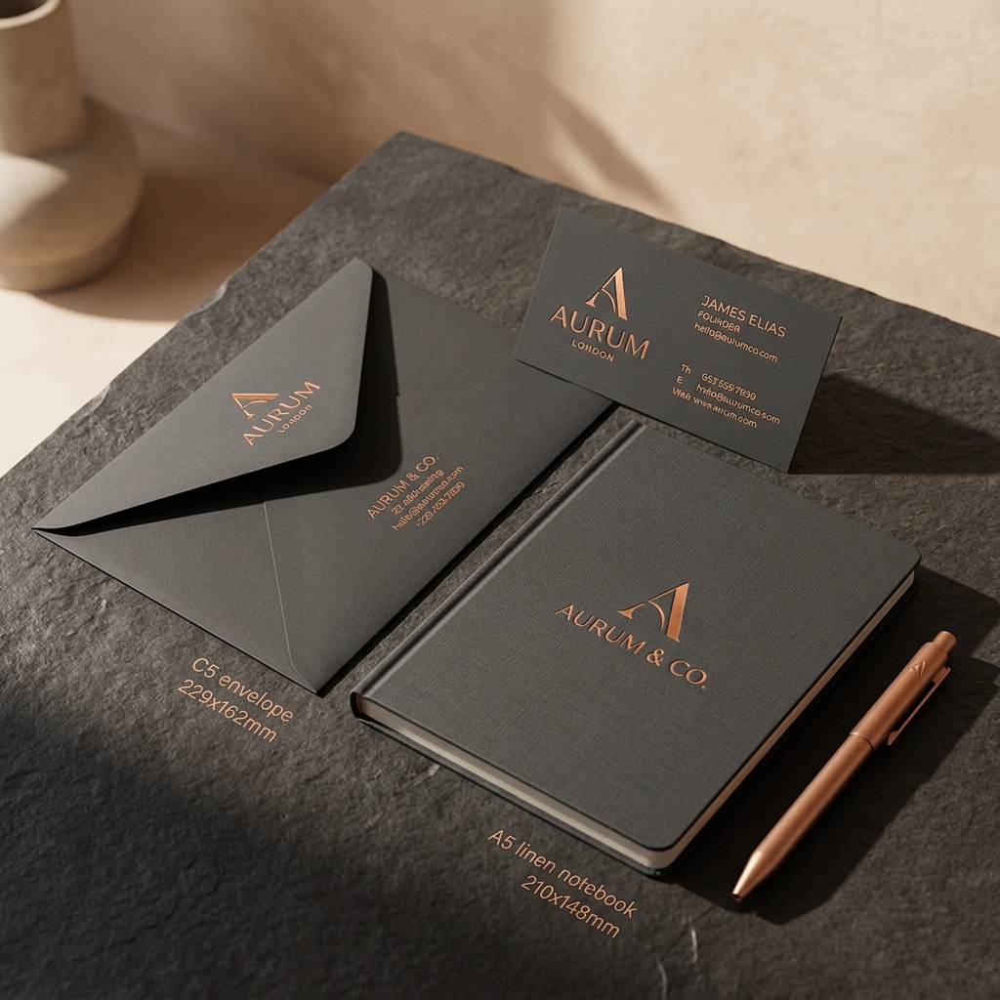
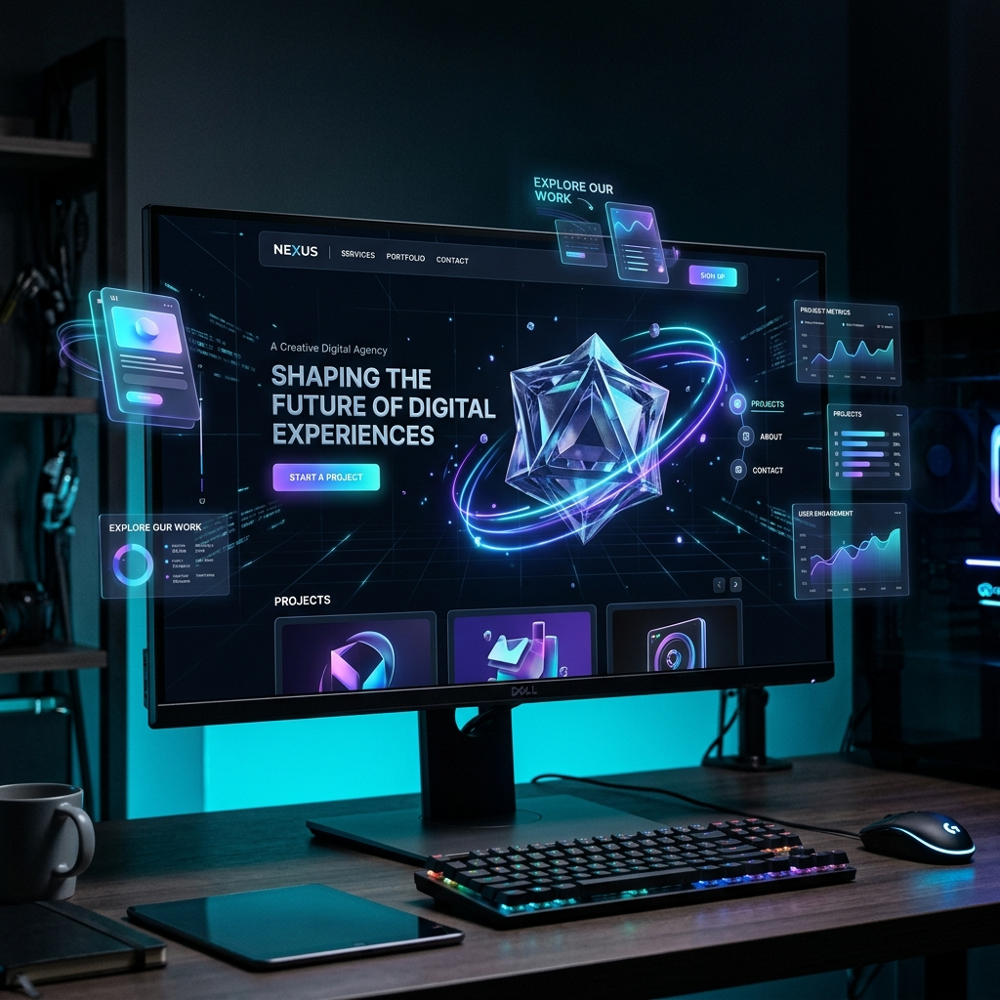

Il corpo e l'edificio in perfetta Sintonia
Una seconda pelle intelligente che trasforma il comfort termico in un dialogo continuo, biometrico e personalizzato tra la persona e l'ambiente circostante.
Biometria Utente
Stabile • Profilo AI attivo
Ambiente Smart
Connesso • Ventilazione Micro
Energy Harvesting
Calore corporeo + Movimento
Perché i sistemi HVAC attuali non funzionano
Gli attuali sistemi di climatizzazione tratteggiano intere aree come blocchi termici uniformi, ignorando la realtà biologica delle persone.
Logica Centralizzata & Uniforme
L'intero edificio viene riscaldato o raffreddato a una temperatura target standard (es. 21°C in inverno), definita per un "utente medio" che non esiste.
- Ignora variabilità metabolica
- Non considera abbigliamento o attività
- Spreca energia in volumi inutili
Comfort Collettivo vs Individuale
In un'aula da 100 persone: alcuni vicino alle finestre sentono caldo (irraggiamento solare), altri vicino alle bocchette sentono freddo. Il sistema non può accontentare tutti.
- Over-cooling e over-heating simultanei
- Discomfort diffuso
- Consumo irrazionale
Impatto Ambientale Enorme
Gli HVAC rappresentano il 40-60% del consumo energetico di un edificio. La maggior parte deriva da fonti non rinnovabili e gas refrigeranti altamente inquinanti (GWP migliaia di volte superiore alla CO₂).
- 30-40% dell'energia mondiale per edifici
- Gas refrigeranti con GWP estremo
- Ciclo feedback negativo con riscaldamento globale
L'interazione Uomo-Edificio ridefinita
Il concept supera la logica tradizionale del riscaldamento e raffrescamento degli interni, spostando il comfort verso una dimensione adattiva e decentralizzata.
Wearable Film & Sensori
SymbioSkin si presenta come un patch leggero, tessuto o film indossabile dotato di sensori microscopici altamente precisi.
- Temperatura Cutanea
- Rilevamento Sudorazione
- Monitoraggio Stress Termico
AI Comfort Profiling
L'intelligenza artificiale integrata modella in tempo reale il profilo termico e invia segnali all'infrastruttura dell'edificio.
- Micro-clima personalizzato
- Regolazione locale ventilazione
- Controllo pannelli radianti
Energy Harvesting
Parte integrante del sistema recupera energia in modo ecologico direttamente dal movimento e dal calore del corpo umano.
- Design a basso consumo
- Auto-alimentazione parziale
- Sostenibilità olistica
La Struttura di SymbioSkin
Una vera seconda pelle intelligente: biosensori, AI adattiva, comunicazione smart building e recupero energetico integrati in un tessuto ultra-sottile.
Layer Biometrico
Biosensori microscopici integrati nel tessuto rilevano:
- Temperatura cutanea (multi-zona)
- Sudorazione e umidità
- Battito cardiaco (PPG)
- Variabilità respiratoria
- Movimento muscolare e postura
- Stress termico corporeo
AI Comfort Profiling
Intelligenza artificiale che impara e predice:
- Profilo termico personale unico
- Pattern di comfort nelle varie attività
- Anticipazione del disagio prima che accada
- Adattamento continuo alle preferenze
- Feedback fisiologico automatico
- Apprendimento contestuale (sport, ufficio, esterno)
Comunicazione Smart Building
Dialogo bidirezionale con l'infrastruttura:
- Bluetooth Low Energy & IoT
- Trasmissione dati biometrici
- Richieste microclimatiche localizzate
- Controllo ventilazione micro
- Regolazione pannelli radianti
- Integrazione con sistemi HVAC intelligenti
Energy Harvesting
Recupero energetico ecologico da:
- Movimento corporeo (piezoelettrico)
- Differenze termiche pelle-ambiente
- Micropressioni muscolari
- Alimentazione parziale autonoma
- Basso consumo energetico
- Design completamente sostenibile
Riscaldamento & Raffreddamento
Controllo termico attivo del corpo:
- Filamenti conduttivi riscaldanti
- Grafene e fibre resistive distribuite
- Moduli di raffreddamento (Peltier/PCM)
- Heat-spreader per distribuzione
- Membrane smart a permeabilità variabile
- Microventilazione interna integrata
Materiali Bio-Compatibili
Tessuto ultra-sottile e indossabile:
- Silicone biocompatibile
- Grafene flessibile
- Nanotubi conduttivi
- Polimeri autorigeneranti
- Elettronica stampata ultra-sottile
- Completamente ecologico e riciclabile
Perché fa risparmiare energia?
Il risparmio nasce dal passaggio da una logica macro a una micro. Invece di trattare un'intera stanza, aula o ufficio come un blocco uniforme, il sistema ottimizza il comfort per singoli cluster o individui.
La progettazione olistica ed energy-aware di SymbioSkin riduce drasticamente i consumi energetici complessivi, migliorando sensibilmente l'interazione tra l'uomo e i sistemi intelligenti di gestione degli edifici.
Ottimizzazione per Cluster
Regolazione termica solo dove e quando serve, eliminando volumi climatizzati inutili.
Impronta Carbon Neutral
Minori carichi di picco sugli impianti HVAC: meno consumi energetici totali, meno emissioni di CO₂ e gas refrigeranti nocivi.
Riduzione Consumi HVAC
Gli HVAC rappresentano il 40-60% del consumo energetico edificio. SymbioSkin riduce drasticamente questo carico.
Comfort Migliorato
Microclima personalizzato e predittivo: meno discomfort, migliore salute termica, maggiore produttività.
Come Funziona il Viaggio di SymbioSkin
Un'esperienza completamente autonoma e seamless: dall'indossamento fino al comfort perfetto e anticipato.
Ingresso nell'Ambiente
L'utente indossa SymbioSkin come un capo tecnico (maglia, tuta o layer interno). Nessun input richiesto: il sistema riconosce autonomamente il cambio di contesto tramite sensori di temperatura, umidità, vento e luce.
Modalità Standby IntelligenteRilevazione Dati Biometrici
Scansione continua tramite micro-sensori integrati: temperatura cutanea (multi-zona), sudorazione, battito cardiaco, respirazione, movimento muscolare. SymbioSkin crea una mappa termica e fisiologica dinamica del corpo in tempo reale.
Acquisizione Dati Real-TimeElaborazione AI
L'AI calcola lo stato termico corporeo: quantità di calore prodotto (metabolismo), dispersione termica, efficacia della sudorazione e previsione di disagio nei prossimi minuti. Genera un "comfort score" e una strategia di correzione immediata.
Modello Predittivo PersonaleAdattamento Microclima Corporeo
SymbioSkin interviene sul layer pelle-ambiente con azioni mirate: riscaldamento localizzato (zone fredde), raffreddamento localizzato (schiena, ascelle), apertura/chiusura della traspirazione, microventilazione interna, gestione dell'umidità.
Controllo Termico AttivoComunicazione con Smart Building
Dialogo bidirezionale con l'edificio: SymbioSkin trasmette stato termico corporeo, livello comfort e richiesta energetica minima. L'edificio risponde regolando ventilazione locale, intensità luminosa, pannelli radianti, sedute climatizzate, schermature solari.
Ecosistema IntegratoRisultato: Comfort Perfetto
L'utente percepisce meno freddo senza vestiti pesanti, meno caldo senza togliere strati, pelle più asciutta, comfort stabile. SymbioSkin riduce gli sbalzi termici e rende l'utente indipendente dall'ambiente esterno. Nel tempo, l'AI impara preferenze contestuali: sport vs ufficio vs esterno.
Comfort Biometrico ContinuoCome SymbioSkin Risolve i Problemi Reali
Una mappatura precisa tra le frustrazioni del cliente, le caratteristiche del prodotto e il valore generato per utenti B2C e aziende B2B.
Profilo del Cliente Target
B2B: Facility Manager
Objective:
- Ridurre bollette energetiche
- Aumentare produttività staff
- Attuare politiche ESG
- Evitare conflitti termostato
B2C: Professionista
Objective:
- Comfort termico stabile
- Monitoraggio salute integrato
- Contribuire sostenibilità
- Autonomia energetica
Frustrazioni vs Soluzioni
🔥 Il Dolore
Stress Termico in Ufficio
Calo di concentrazione e produttività✓ La Soluzione
Riscaldamento/Raffreddamento Localizzato
Patch in grafene + AI predittiva💡 Impatto
Benessere Costante
Focus mantenuto, pelle asciutta💰 Il Dolore
Bollette HVAC Insostenibili
40-60% dei consumi totali✓ La Soluzione
Climatizzazione Intelligente per Cluster
Smart Building Integration📊 Impatto
Riduzione 40-50%
Consumi HVAC drasticamente abbattuti🌍 Il Dolore
Nessun Tracking ESG Reale
Impossibile certificare sostenibilità✓ La Soluzione
Dashboard SaaS Automatizzato
Calcolo real-time CO2 evitata📈 Impatto
Bilancio Sostenibilità Certificato
kWh risparmiati + kg CO2 evitatiI Pilastri della Soluzione
Wearable Ultra-Sottile
Patch bio-integrato in silicone e grafene con biosensori epidermici. Completamente trasparente all'utente e compatibile con qualsiasi abbigliamento.
AI Predittiva Proprietaria
Algoritmo intelligente che mappa la "Firma Termica" personale, intercetta variazioni vascolari e umidità cutanea prima che il disagio si manifesti.
IoT Building Integration
Comunicazione bidirezionale tramite ZigBee e BLE con impianti HVAC centralizzati. Sincronizzazione per cluster biometrici ristretti.
Energy Harvesting Integrato
Recupero energetico dalle differenze termiche corporee e dai micro-movimenti. Auto-alimentazione parziale che riduce dipendenza da batterie.
Quando e perché scegliere SymbioSkin
Il nostro sistema si presta perfettamente a progetti innovativi ad alto impatto tecnologico, visivo ed emotivo.



SymbioSkin: Opportunità di Investimento
Un'analisi completa del modello di business, della strategia di go-to-market e dell'ROI per investitori istituzionali.
Metriche di Valore Certificato
Riduzione Consumi HVAC
Abbattimento dei costi energetici di riscaldamento e raffreddamento per edificio
ROI Payback
Recupero dell'investimento tramite risparmi energetici e implementazione SaaS
CO2 Ridotta
Diminuzione dell'impronta di carbonio per sede aziendale implementata
TAM (Total Addressable Market)
Mercato globale HVAC + wearable salute + IoT building integrato
Modello di Business
💰 Revenue Streams
- Hardware: Vendita patch wearable (€299-599)
- SaaS Freemium: Piano Base, Pro, Enterprise
- Licenza B2B: Integrazione smart building
- White-Label: Licenze per OEM e partner
🎯 Customer Segments
- B2C: Professionisti wearable-aware (25-50 anni)
- B2B: Facility Manager aziendali (500+ dipendenti)
- Enterprise: Campus universitari, ospedali, data center
- IoT Partners: Produttori smart building
🔑 Key Resources
- IP: Patent portfolio su AI predittiva
- Tech Stack: Biosensori, grafene, algoritmi ML
- Partnership: BioMed Inc, fornitori HVAC smart
- Team: Ex-Google, MIT Media Lab, Philips
📈 Growth Metrics
- Year 1: 5,000 unità, €2.5M ricavi
- Year 3: 150,000 unità, €45M ricavi
- Year 5: 500,000 unità, €180M ricavi
- Exit Target: €500M+ (Philips, Siemens, Google)
Pronto a integrare SymbioSkin?
Sia che tu stia progettando uno smart building di ultima generazione o sviluppando un concept di wearable tech, scrivici per pianificare una demo o collaborare.
Milano, Italia